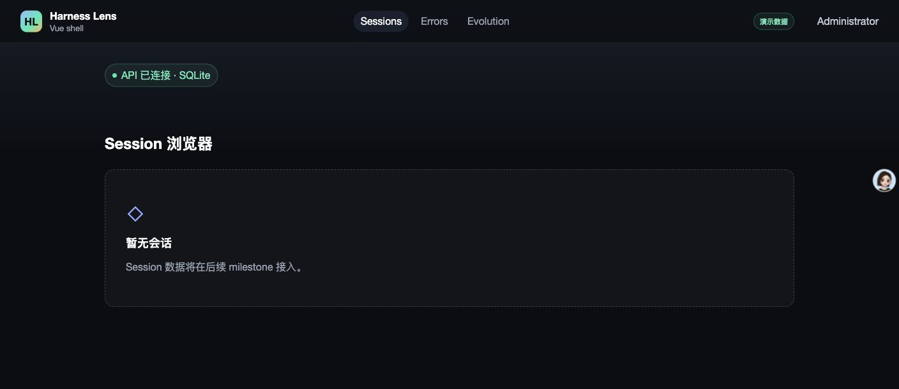
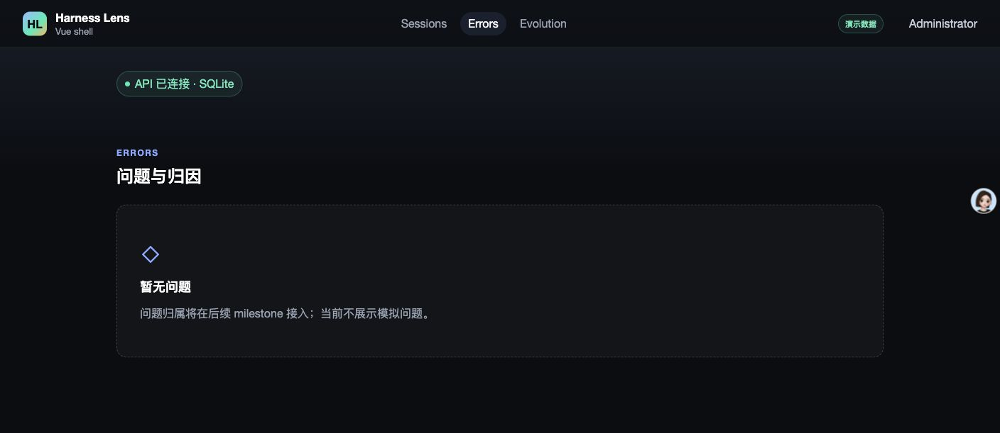
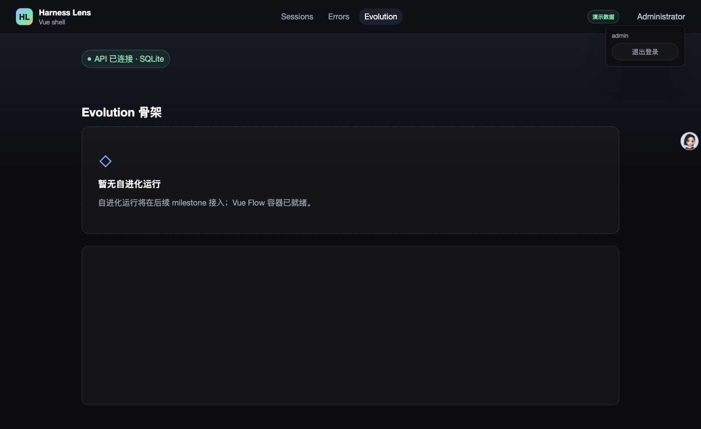
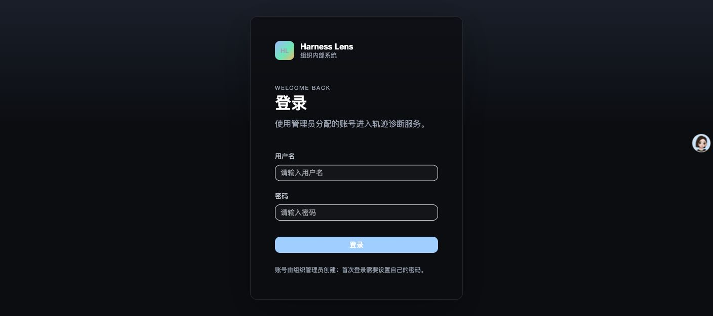
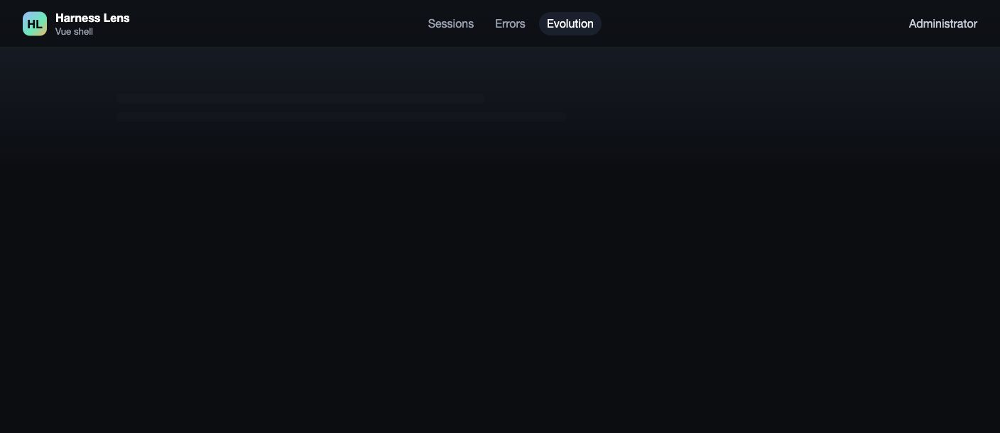
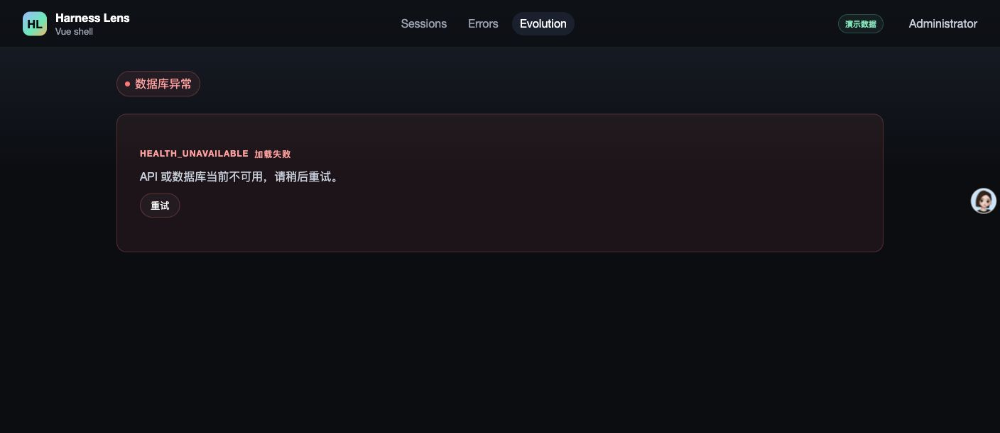
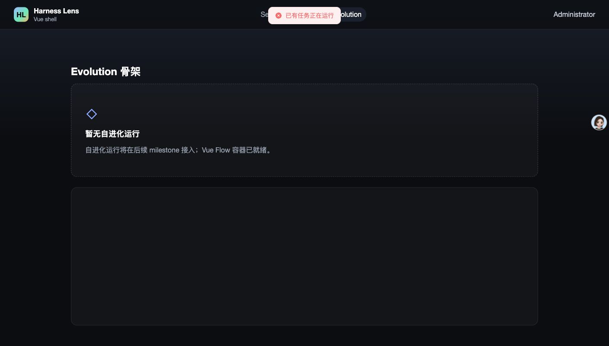
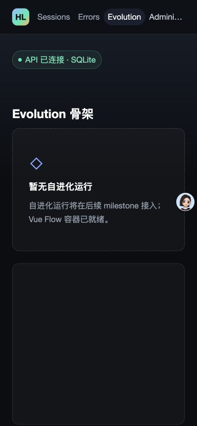
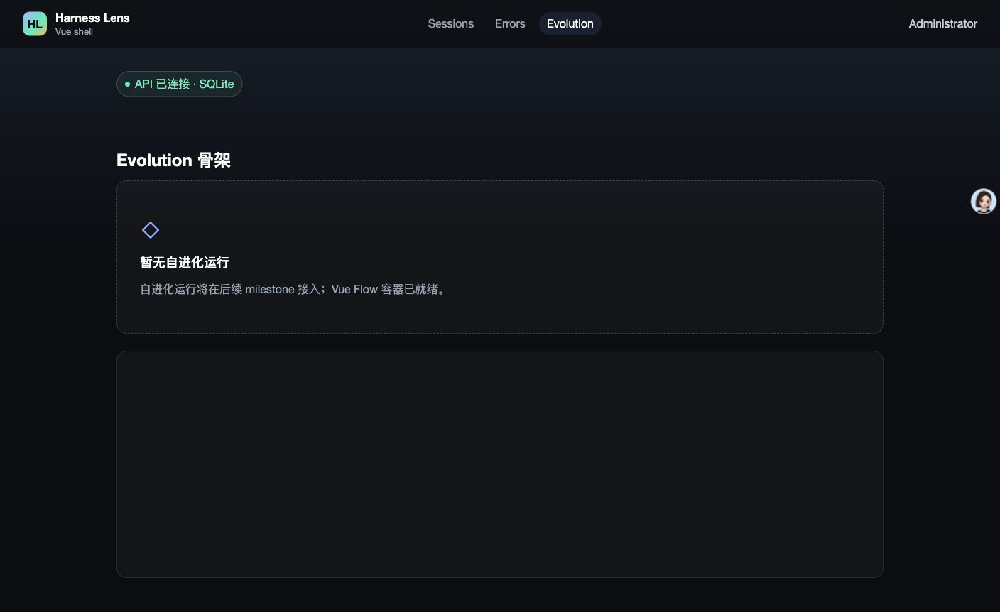
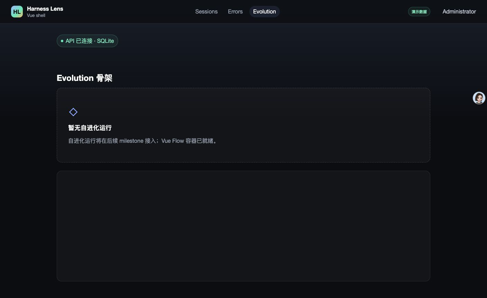

- Issue
- #32 · M1 app shell states
- PR
- #81
- Commit
- a557ff9
- Runtime
- FastAPI + Vite + Chrome
- Database
- 隔离 SQLite
- Phase
- demo / scaffold / live 均实测
Harness Evolution · PR #81
M1-09 应用壳与三态集成冒烟
在真实 Chrome、Vite、FastAPI 与隔离 SQLite 上验证三入口、共享三态、demo 角标、错误提示和响应式布局。13 个运行时场景中 12 个通过；Evolution 首次渲染出现 4 条 Vue Flow 容器尺寸 warning，因此控制台清洁验收失败。
13运行时场景
12通过
1失败场景
4Vue Flow warning
Environment and Artifact
2026-10-25 · macOS · Chrome · localhostScenario Matrix
12 pass · 1 fail| # | 场景 | 结果 | 观测 | 证据 |
|---|---|---|---|---|
| 01 | Sessions 默认页与三入口 | PASS | 登录后进入 /sessions；Sessions、Errors、Evolution 均可见，Sessions active，空态与 demo 角标正确。 | screenshots/02-sessions-demo.jpg |
| 02 | Errors 占位 | PASS | /errors 为已鉴权占位页，active 为 Errors；显示“暂无问题”并明确后续 milestone 接入，没有模拟问题行。 | screenshots/03-errors-placeholder.jpg |
| 03 | Evolution 占位 | PASS | /evolution 显示空态与 Vue Flow 容器，active 为 Evolution，没有伪造运行记录。 | screenshots/04-evolution-placeholder.jpg |
| 04 | 强制首登改密入口 | PASS | 临时管理员登录后进入 /change-password?redirect=/sessions，受保护壳层未闪现；改密由本地隔离账号通过 HTTP 完成。 | screenshots/01-force-password.jpg |
| 05 | 用户菜单与退出 | PASS | 顶栏用户菜单可见，退出后回到 /login，受保护导航消失。 | screenshots/05-user-menu.jpg screenshots/06-unauth-redirect.jpg |
| 06 | 未登录三路由回跳 | PASS | /sessions、/errors、/evolution 分别回到 /login?redirect=<原路径>，未渲染受保护内容。 | screenshots/06-unauth-redirect.jpg redirects=/sessions,/errors,/evolution |
| 07 | 新密码重新登录 | PASS | 改密后的账号可重新登录并回到安全 redirect 目标。 | HTTP login=200 · mustChange=false |
| 08 | Health loading | PASS | health 延迟 1.5 秒时显示共享 LoadingSkeleton，TopNav 与 shell 保持可见。 | screenshots/07-health-loading.jpg |
| 09 | Health unavailable + retry | PASS | 规范 503 health payload 显示 HEALTH_UNAVAILABLE、共享 ErrorState 与重试；点击后恢复 Evolution 页面。 | screenshots/08-health-error-retry.jpg screenshots/13-health-retry-success.jpg |
| 10 | 409 RUN_BUSY Message | PASS | 409 health 注入显示固定定位 ElMessage“已有任务正在运行”；导航、页面和 shell 均保留，无整页 ErrorState。 | screenshots/09-conflict-toast.jpg toast=已有任务正在运行 |
| 11 | Demo 角标 phase 三分支 | PASS | demo 显示“演示数据”；scaffold 与 live 均不显示角标。 | screenshots/02-sessions-demo.jpg screenshots/11-scaffold-no-badge.jpg screenshots/12-live-no-badge.jpg |
| 12 | Seed 幂等与无假领域数据 | PASS | fixtures:seed 连续两次返回 noop；users=1、job_runs=0、evolution_run_events=0，无 session/bad-case/probe 假数据。 | seed run 1=noop seed run 2=noop rows users=1 job_runs=0 events=0 |
| 13 | 390px 响应式与控制台 | FAIL | 390px 下 scrollWidth=390、clientWidth=390，用户菜单在视口内；但 Evolution 首次渲染记录 4 条 Vue Flow 容器尺寸 warning，控制台清洁验收失败。 | screenshots/10-narrow-viewport.jpg console-main.json Vue Flow warnings=4 |
Issues and Observations
P2 Evolution 首次渲染产生 Vue Flow 容器尺寸 warningEvolution 首次渲染产生 Vue Flow 容器尺寸 warning
- 位置
- apps/web/src/pages/evolution/Index.vue 的 Vue Flow 容器首次挂载
- 实际
- 真实 Chrome 控制台记录 4 条 [Vue Flow]: The Vue Flow parent container needs a width and a height to render the graph。
- 期望
- 登录用户在三大入口之间导航时控制台无 warning/error。
- 根因候选
- Vue Flow 在 CSS 完成尺寸测量前初始化，首次挂载读到零尺寸容器。
- 复现
- 全新 Chrome 登录后依次访问 Sessions、Errors、Evolution，读取该 tab 的 warn/error 日志。
未修复
Evidence
13 screenshots











Automated Coverage Assessment
4 areas reviewed| 区域 | 覆盖 | 结论 | 建议 |
|---|---|---|---|
| 三入口与鉴权 | 真实 Chrome + FastAPI | Sessions/Errors/Evolution、active、安全回跳和用户菜单均已实测。 | 保留现有 CDP E2E 作为 CI 基线。 |
| 共享三态与 409 | 真实 Chrome + 故障注入代理 + HTTP | loading、503 ErrorState、retry、409 Message 和 shell 保留均通过。 | 继续使用显式 status/URL 的预期错误窗口，避免吞掉未知控制台错误。 |
| Seed 幂等 | 真实 CLI + SQLite | 重复执行均为 noop，没有会话、问题、probe 或 run 假数据。 | M2 fixture corpus 继续由 m2-01 接管。 |
| 控制台清洁 | 真实 Chrome DevTools logs | 发现 Vue Flow 首次挂载 warning；现有无头 E2E 未复现该浏览器差异。 | 修复后重新运行真实 Chrome 冒烟并在 E2E 中固定容器尺寸就绪条件。 |
Conclusion
功能通过 · 控制台告警待修M1 应用壳的主要功能与三态均正常，但 Evolution 首次真实浏览器渲染仍有 Vue Flow warning，控制台清洁验收尚未通过。
- 13 个运行时场景中 12 个通过。
- 唯一缺陷是 4 条 Vue Flow 容器尺寸 warning。
- 建议先补容器尺寸就绪回归，再从全新 Chrome 标签重跑本报告。
证据源：Computer Use 浏览器截图、真实 Chrome DevTools logs、真实 HTTP/SQLite 与自动测试。HTML 由 JSON renderer 生成。